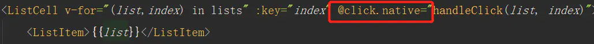

vue学习笔记
Vue.js学习笔记
注意事项：
1
2
3<!-- 注意，参数表达式的写法存在一些约束，如之后的“对动态参数表达式的约束”章节所述。 -->
<a v-bind:[attributeName]="url"> ... </a>
<a v-on:[eventName]="doSomething"> ... </a>使用上述动态方式插入属性名/事件名的时候，要尽量避免使用大写字母，因为在 DOM 中使用模板时 (直接在一个 HTML 文件里撰写模板)，还需要避免使用大写字符来命名键名，因为浏览器会把 attribute 名全部强制转为小写：
1
2<!-- 在 DOM 中使用模板时这段代码会被转换为 `v-bind:[someattr]`。 除非在实例中有一个名为“someattr”的 property，否则代码不会工作。 -->
<a v-bind:[someAttr]="value"> ... </a>计算属性和方法的区别
计算属性是基于它们的响应式依赖进行缓存的。只在相关响应式依赖发生改变时它们才会重新求值。这就意味着只要
message还没有发生改变，多次访问reversedMessage计算属性会立即返回之前的计算结果，而不必再次执行函数。这也同样意味着下面的计算属性将不再更新，因为
Date.now()不是响应式依赖：1
2
3
4
5computed: {
now: function () {
return Date.now()
}
}相比之下，每当触发重新渲染时，调用方法将总会再次执行函数。
v-ifvsv-showv-if是“真正”的条件渲染，因为它会确保在切换过程中条件块内的事件监听器和子组件适当地被销毁和重建。v-if也是惰性的：如果在初始渲染时条件为假，则什么也不做——直到条件第一次变为真时，才会开始渲染条件块。相比之下，
v-show就简单得多——不管初始条件是什么，元素总是会被渲染，并且只是简单地基于 CSS 进行切换（css的属性display）。一般来说，
v-if有更高的切换开销，而v-show有更高的初始渲染开销。因此，如果需要非常频繁地切换，则使用v-show较好；如果在运行时条件很少改变，则使用v-if较好。不推荐
v-if和v-for同时使用当
v-if与v-for一起使用时，v-for具有比v-if更高的优先级。这会导致性能的浪费，每次都是先循环再进行条件判断，需要一起用的时候可以把v-if放到外层，查看列表渲染指南获取详细信息。v-bind:简写为:, 用来绑定属性（attribute），v-on:简写为@，用来绑定事件在组件中时常看到@click.native。在项目中遇到后，简单介绍下：
一丶@click.native是给组件绑定原生事件
我的标签 ‘ListCell’ 是子组件引到当前父组件
因为当父组件中引入子组件的时候，当要触发子组件点击事件的时候@click 不生效。
有两种解决方式
1.@click.native
2.在子组件中添加this.$emit ( “事件名” ，value )方法 将子组件的值传到父组件。命名slot传值
父组件：
1
2
3
4
5
6<!-- 命名插槽的使用语法 todo-item为插槽的name, 等号后面跟着是子组件传递出数据供父组件使用 -->
<template v-slot:todo-item="itemProps">
{{itemProps}}
<!-- 用对象形式写css -->
<span :style="{marginLeft: '15px', color: itemProps.isChecked ? 'red' : 'blue'}">{{item}}</span>
</template>其中v-slot冒号后面跟着为slot的name属性的值，等号后面为传来的数据
子组件：
1
2
3
4
5
6<template>
<li class="show-item">
<input type="checkbox" v-model="isChecked">
<slot name="todo-item" :isChecked="isChecked"></slot>
</li>
</template>其中name属性要和父组件引用的name属性一致，传值这里有两种写法，一种是如上的
:键="值"（注意不用加大括号）。另一种写法是v-bind="{isChecked}"如果为多属性则为：v-bind="{isChecked, 属性2,}"（注意有大括号）Vue实现响应式的原理
Vue创建一个实例的时候，根据data中各个项的属性，用
Object.defineProperty将他们转为getter/setter并且在内部追踪相关的依赖，在属性被访问和修改时通知变化。watcher实例在组件渲染过程中将属性记录为依赖，之后依赖项的setter被调用的时候，会通知watcher重新计算，从而致使它关联的组件得以更新。
v-model的原理
父组件通过props传值给子组件，子组件通过$emit来通知父组件修改相应的props值。
vue中data为什么是一个函数
如果data是一个对象的话，属于是一个引用数据类型，如果该组件被多处使用，那么所有该组件生成的实例的data都共用一份data，就会导致所有组件的data都一样，一个变了其他的跟着变。而如果data是一个函数的话，每复用一次组件，就会返回一个新的data，因为每个函数有自己单独的作用域，这样每个实例就会相互独立互不影响。
所有的组件的data都必须是函数么？
vue2如果是根组件可以是对象，vue3全部必须是函数。
vue中
$set()函数的作用该函数作用是实现某一个数据的响应式，组件实例化过程中会将data中的属性变成响应式的，但是这一转换为响应式的过程在data动态添加新属性的时候并不会执行，此时我们可以手动的用$set()函数来将其变为响应式。
webpack的
tree shaking功能是基于ES6 modules的静态特性检测，来找出未使用的代码，所以如果使用了 babel 插件，如：babel-preset-env，它默认会将模块打包成commonjs，这样就会让Tree Shaking失效了，解决方案是让babel不transform modules就可以了，配置如下：1
2
3
4
5
6
7
8
9
10// .babelrc
{
// 设置默认对于modules不进行处理
"presets": [
["env", {
modules: false,
...
}]
]
}diff算法
vue组件间通信的方案
props传递 (父 -> 子)
$emit触发自定义事件 （子 -> 父）
使用ref ，父组件通过设置子组件的ref然后
this.$refs.xxx就可以获得子组件实例（子 -> 父）
EventBus
- 创建一个中央事件总线
EventBus - 兄弟组件通过
$emit触发自定义事件，$emit第二个参数为传递的数值 - 另一个兄弟组件通过
$on监听自定义事件
- 创建一个中央事件总线
$parent或者$root
- 通过共同的$parent或$root来搭建通信
attrs与listeners
Provide与Inject
Vuex
vue双向绑定怎么实现的
$nextTick()
涉及到vue一种优化策略，在实例中数据发生变化的时候，vue并不会立刻去更新DOM，而是将修改数据的操作放到一个异步操作队列中，（在队列中还有相关的去重操作），等待同一个事件循环中所有的数据变化完成之后，vue会将该队列中的事件依次处理，再进行DOM更新。
而nextTick()可以在修改数据之后立刻得到更新后的DOM结构。
asd
asd
asd